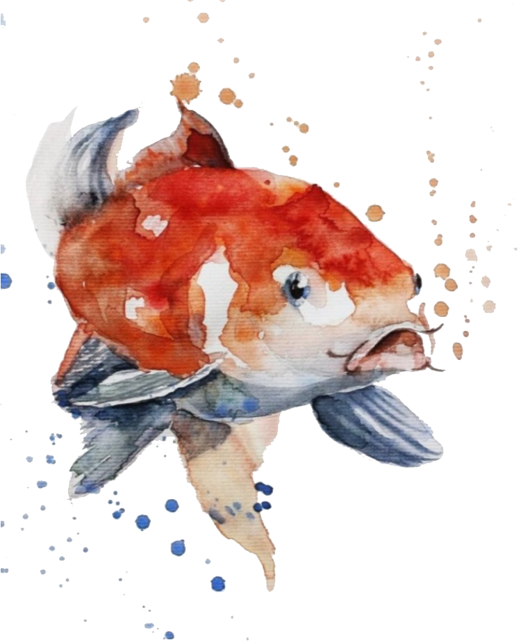

О компании
Сейчас наш производственный комплекс занимает площадь около одного гектара. На этой территории расположены посольный и коптильный цеха, цех сборки заказов, вспомогательные, складские и офисные помещения. Численность работающего на предприятии персонала – около 200 человек. Холодильные мощности позволяют хранить до 2000 тонн продукции, отгружать ежедневно более 15 тонн готовой продукции.
На предприятии внедрен международный стандарт системы менеджмента безопасности пищевых продуктов НАССР. Все технологические процессы происходят в соответствии с этим стандартом, что подтверждается регулярно проходящими аудитами как со стороны торговых сетей, так и со стороны государственных контролирующих органов.
Мы выпускаем экологически чистую продукцию: цех копчения оборудован коптильными камерами, в которых рыба коптится на натуральной сухой ольховой щепе, закупаемой у проверенного поставщика. Копчение ведется старым «дедовским» способом, без применения красителей, усилителей вкуса и т.п.
Мы сотрудничаем и поставляем свою продукцию во многие торговые сети и стараемся расширять список наших партнеров. Однако и сами не стоим на месте – тоже растем и совершенствуемся.